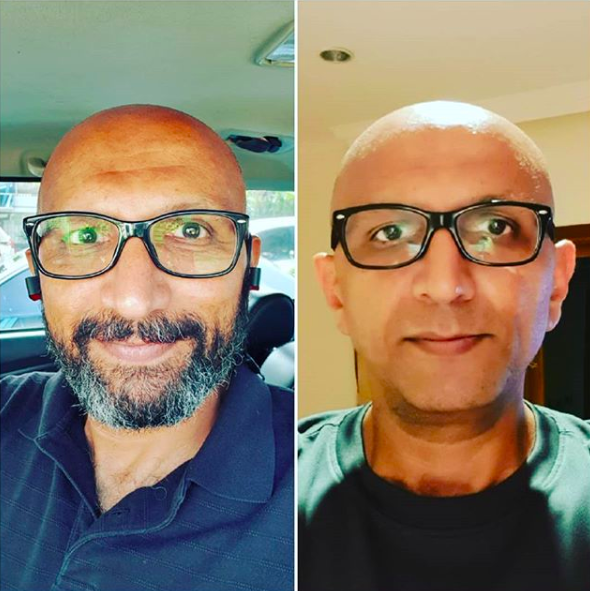
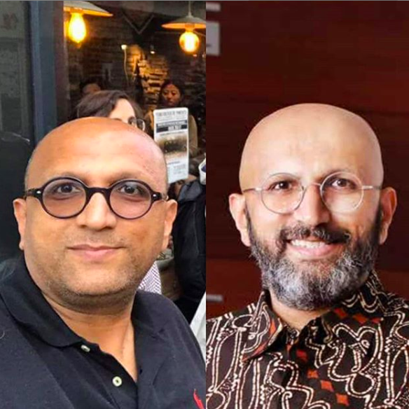

From birth till early childhood, Umesh had a normal weight, despite the fact he was never into active extra curriculars. But, as he reached the age of 10, his weight drastically began to take over his body. With no active activity in his life, he spent most of his time studying, which has now paid off. But, as he continued to grow, his weight problem worsened, eventually threatening his overall health and wellbeing. When I was a child, he had a heavy coke influence which also contributed to his health. Eventually, around two years ago, Umesh decided that enough was enough. He was ready to work hard to get back in shape so that he could live a healthy life. This is a snippet of his journey.
Over the past two years, Umesh has been dieting, working out like hell, and changing his everyday habits. It all paid off, because as of right now, Umesh has lost 30 kg! Although it has significantly changed his life and influenced many healthy habits, he still hasn’t reached his goal. As you can see, the picture on the left shows Umesh from before he started working out, to after he lost 20kg. The photo on the left shows him after he lost that 20kg to now, when he lost 10kg more.

